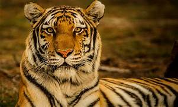

Über die Tiere
Der Tiger,wissenschaftlich als Panthera tigris bekannt, ist zweifellos eine der faszinierendsten und majestätischsten Raubtiere, die unseren Planeten bewohnen. Mit seiner auffälligen orangefarbenen Fellzeichnung und den charakteristischen schwarzen Streifen ist der Tiger ein Symbol für Stärke, Schönheit und Anmut. Tiger sind die größten aller Katzenarten und können beeindruckende Größen erreichen. Ein ausgewachsener männlicher Tiger kann eine Länge von bis zu 3,3 Metern und ein Gewicht von über 300 Kilogramm erreichen. Die Weibchen sind in der Regel etwas kleiner, aber immer noch imposant. Diese majestätischen Tiere sind auf dem asiatischen Kontinent heimisch und bewohnen verschiedene Lebensräume, von dichten Wäldern bis zu grasbewachsenen Ebenen. Es gibt mehrere Unterarten von Tigern, darunter der Bengal-Tiger, der Sibirische Tiger, der Malaiische Tiger und andere. Jede Unterart hat ihre eigenen einzigartigen Merkmale und Verbreitungsgebiete. Tiger sind beeindruckende Jäger und haben eine breite Palette von Beutetieren, darunter Hirsche, Wildschweine und Affen. Sie sind dafür bekannt, sich leise und unauffällig an ihre Beute heranzuschleichen, bevor sie mit erstaunlicher Geschwindigkeit zuschlagen. Leider sind Tiger heute gefährdet, hauptsächlich aufgrund von Lebensraumverlust und illegaler Wilderei. Ihr Bestand hat in den letzten Jahrzehnten stark abgenommen, und viele Schutzmaßnahmen sind im Gange, um diese majestätischen Katzen zu erhalten. Naturschutzorganisationen und Regierungen arbeiten daran, den illegalen Handel mit Tigerprodukten zu bekämpfen und geschützte Gebiete für diese Tiere zu schaffen. Die Erhaltung der Tiger ist von entscheidender Bedeutung, nicht nur für die Artenvielfalt, sondern auch für das ökologische Gleichgewicht in den Regionen, in denen sie leben. Diese beeindruckenden Katzen verdienen es, bewundert, geschützt und respektiert zu werden, damit auch zukünftige Generationen die Gelegenheit haben, ihre Schönheit und Pracht in freier Wildbahn zu erleben.
Der Löwe,wissenschaftlich als Panthera leo bekannt, ist zweifellos eines der bekanntesten und emblematischsten Tiere der Tierwelt. Als König der Tiere wird er oft mit Macht, Stärke und Majestät in Verbindung gebracht. Dieses imposante Raubtier ist weit verbreitet in den Savannen und Grasländern Afrikas sowie einigen kleinen Populationen im indischen Subkontinent. Löwen sind große Katzen, die in Gruppen, sogenannten Rudeln, leben. Diese Rudel bestehen aus eng miteinander verwandten Weibchen, ihren Nachkommen und einem oder mehreren dominanten Männchen. Die Männchen sind bekannt für ihre eindrucksvolle Mähne, die von golden bis dunkelbraun variieren kann und oft als Zeichen von Dominanz und Gesundheit gilt. Die Löwen sind effiziente Jäger, die sich auf eine Vielzahl von Beutetieren spezialisiert haben, darunter Zebras, Gnus, Büffel und Antilopen. Sie nutzen oft die Taktik des Gruppenjagens, bei der sie ihre Beute gemeinsam erlegen, um ihre Chancen auf Erfolg zu maximieren. Die Weibchen übernehmen oft die Hauptverantwortung für die Jagd, während die Männchen die Gruppe gegen Eindringlinge verteidigen. Die Sozialstruktur der Löwenrudel ist einzigartig unter den Großkatzen. Diese Gruppenstruktur ermöglicht es ihnen, effizienter zu jagen, sich vor Feinden zu schützen und die Aufzucht der Jungen zu erleichtern. Löwen sind auch bekannt für ihre lauten, brüllenden Rufe, die dazu dienen, ihr Territorium zu markieren und mit anderen Mitgliedern ihres Rudels zu kommunizieren. Leider sind Löwen wie viele andere Großkatzenarten durch Lebensraumverlust, Wilderei und Konflikte mit Menschen bedroht. Eine umfassende Erhaltungsbemühung ist erforderlich, um diese majestätischen Tiere zu schützen und sicherzustellen, dass sie auch in Zukunft in der Wildnis Afrikas und Asiens überleben können. Der Löwe ist nicht nur ein Symbol für Wildnis und Stärke, sondern auch ein entscheidender Teil des Ökosystems in den Regionen, in denen er lebt.
.jpeg)
Der Elefantist eines der beeindruckendsten und faszinierendsten Tiere unserer Welt. Diese majestätischen Säugetiere gehören zur Familie der Elefanten und sind für ihre enorme Größe, ihren langen Rüssel und ihre beeindruckenden Stoßzähne bekannt. Es gibt zwei Hauptarten von Elefanten: den Afrikanischen Elefanten und den Asiatischen Elefanten, wobei jede Art ihre eigenen Unterarten hat. Der Afrikanische Elefant ist der größte lebende Landsäuger auf der Erde. Er kann eine Schulterhöhe von bis zu vier Metern und ein Gewicht von über sechs Tonnen erreichen. Asiatische Elefanten sind etwas kleiner und unterscheiden sich unter anderem durch kleinere Ohren und einen buckligen Rücken. Der markanteste Teil des Elefanten ist sein Rüssel, der eine bemerkenswerte Anpassung an verschiedene Aufgaben darstellt. Der Rüssel dient zum Greifen von Nahrung, zum Trinken, zum Riechen, zur Kommunikation und sogar zum Kühlen des Körpers durch das Versprühen von Wasser oder Schlamm. Elefanten sind sozial und intelligent. Sie leben oft in engen Familienverbänden, die von einer matriarchalen Leitkuh geführt werden. Diese Familienstrukturen sind komplex und spielen eine wichtige Rolle bei der Aufzucht der Jungen und dem Schutz vor Raubtieren. Leider sind Elefanten heute ernsthaft bedroht. Hauptursachen für ihren Rückgang sind Wilderei, illegaler Elfenbeinhandel und Lebensraumverlust durch die Ausdehnung menschlicher Siedlungen und landwirtschaftlicher Flächen. Eine Vielzahl von Naturschutzmaßnahmen und -organisationen setzt sich für den Schutz der Elefanten ein, einschließlich der Stärkung von Anti-Wilderei-Maßnahmen und der Schaffung geschützter Lebensräume. Die Erhaltung der Elefanten ist von entscheidender Bedeutung, nicht nur wegen ihrer faszinierenden Natur, sondern auch wegen ihrer ökologischen Rolle als sogenannte "Ökoingenieure". Sie beeinflussen die Landschaft und fördern das Wachstum von Wäldern, indem sie Pflanzensamen verteilen und Wasserstellen schaffen. Elefanten sind ein Symbol für die Wildnis und ein wichtiger Teil unseres globalen Erbes, den es zu schützen gilt, damit künftige Generationen die Möglichkeit haben, diese wunderbaren Tiere in freier Wildbahn zu bewundern.
.jpeg)
.jpeg)
.jpeg) s
s